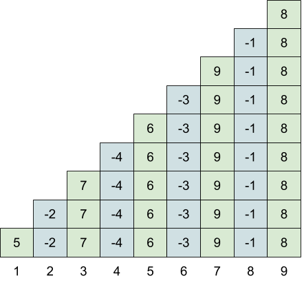
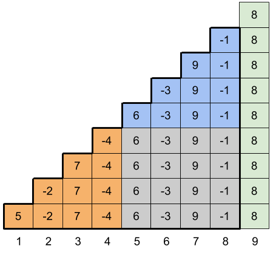

Let us ignore the update operations for now and look at how we can answer the queries efficiently. Take the array A = [5, 2, 7, 4, 6, 3, 9, 1, 8] as an example. The sweetness score for the query (1, 9) from l = 1 to r = 9 is intuitively visualized in the following diagram.
The i-th element (-1)i-1Ai × i of the sweetness score sum is represented as a stack of i blocks in the i-th column of the diagram. The values in every other column are negated to account for the sign in the sweetness score sum. Obviously, the sum of all squares in the diagram is the sweetness score of the query (1, 9).
A crucial observation is that the sweetness scores for all other queries are embedded in the diagram as well. For example, the query (5, 8) corresponds to the blue shaded blocks in the diagram below, and the sweetness score of (5, 8) can be conveniently computed as the sum of all blocks inside the area with the bold outline minus the sum of orange and gray blocks. Note, however, that for queries (l, r) with even left endpoint l, we should take the additive inverse of the value computed this way to obtain the correct sweetness score.

The above observations suggest a solution using prefix sums. Let us define the
regular prefix sums S(i) as S(0) = 0 and
S(i) = (-1)i-1Ai + S(i - 1) for i ≥ 1. Similarly, let us define
the multiple prefix sums MS(i) as MS(0) = 0 and
MS(i) = (-1)i-1Ai × i + MS(i - 1) for i ≥ 1. Then the sweetness
score of a query (l, r) is
(-1)l-1(MS(r) - MS(l - 1) - (l - 1) × (S(r) - S(l - 1))).
Computing the prefix sums takes O(N) time, and once we have them, each query can be answered in constant time. Therefore, the overall time complexity of the algorithm is O(N + Q).
So far we have disregarded the update operations, however, since there are no more than 5 of them, we can recompute the prefix sums after each update operation without increasing the time complexity.
Here the number of update operations is unlimited, and the time complexity of the previous algorithm becomes O(NQ), which is inefficient. However, we can still use very much the same idea by maintaining two segment trees – a tree T for storing the values (-1)i-1Ai and another tree MT for storing the values (-1)i-1Ai × i. Then the answer to a query (l, r) becomes (-1)l-1(MT.rangeSum(l, r) - (l - 1) × T.rangeSum(l, r)).
Since updates and range queries in a segment tree take O(log N) time, the overall time complexity of the algorithm is O(N + Q log N).